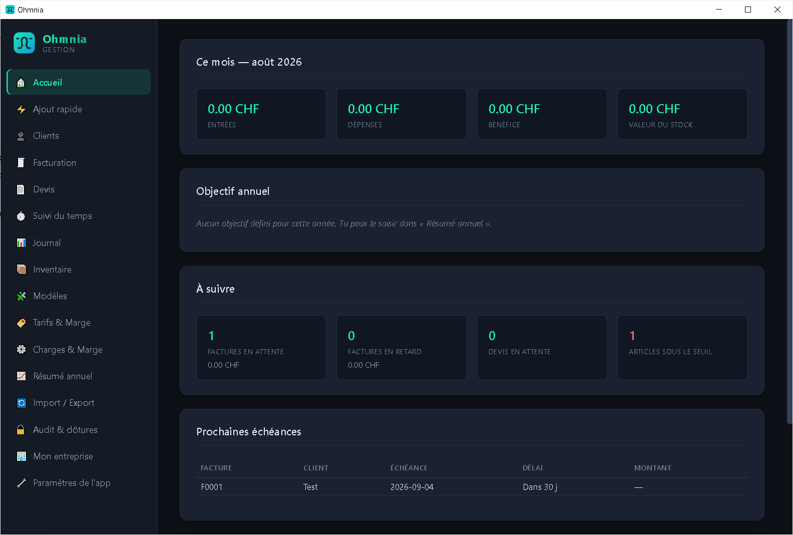
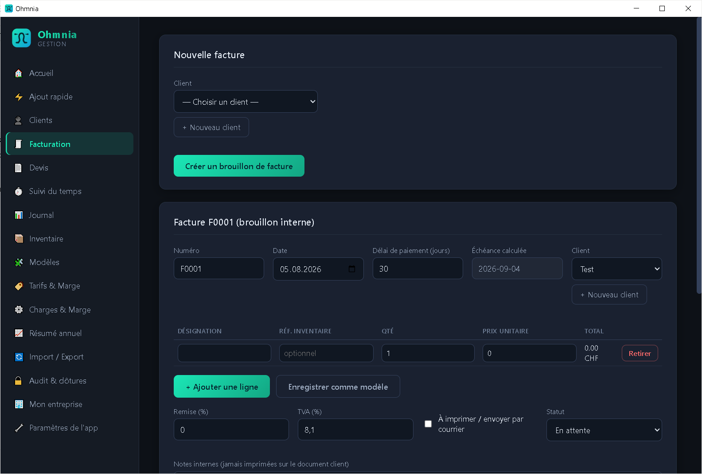
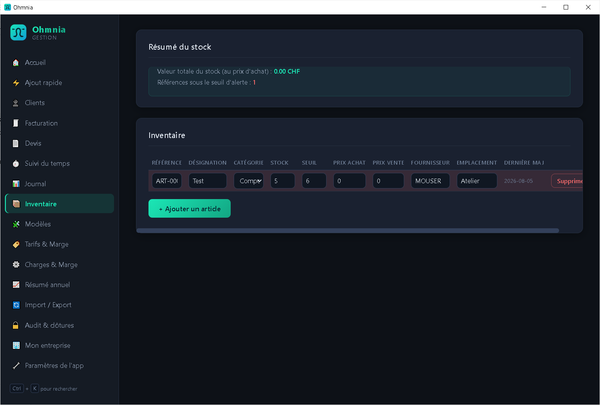

Facturation et devis
Création de devis et de factures, conversion en un clic, export PDF prêt à envoyer.
Facturation, devis, comptabilité simplifiée et inventaire dans une seule application installée sur votre machine. Aucun compte, aucun serveur, aucune connexion requise.
Windows · installation locale
Ohmnia stocke l'intégralité de vos dossiers dans un fichier local que vous contrôlez. Il n'existe aucune synchronisation implicite, aucun envoi de statistiques d'usage et aucun accès distant à votre comptabilité.
Les outils courants d'une activité indépendante, sans dépendance à un service en ligne.
Création de devis et de factures, conversion en un clic, export PDF prêt à envoyer.
Suivi des échéances et relances des factures impayées selon vos délais.
Enregistrement des heures par client et par projet, report direct en ligne de facture.
Gestion des articles et des mouvements de stock, avec alertes de seuil.
Journal des recettes et dépenses, import de relevés bancaires (CSV et CAMT.053) et rapprochement automatique.
Archives chiffrées de vos données, sur le support de votre choix.
Réglages de taxe et mentions légales pour la Suisse, la France, la Belgique, le Luxembourg et l'Allemagne — des points de départ à vérifier, pas une certification.
Vos écritures, clients et articles exportables en CSV et PDF à tout moment.
Interface de l'application sur poste de travail.



La dernière version est publiée sur GitHub. Téléchargez l'installeur et lancez-le.
Jamais installé de programme sur Linux ? Suivez le guide pas à pas.
Au premier lancement, Windows peut afficher un avertissement SmartScreen (« Windows a protégé votre ordinateur »). L'installeur n'est pas signé par un certificat commercial, ce qui est courant pour une application indépendante. Cliquez sur Informations complémentaires, puis Exécuter quand même. Le code source est public si vous souhaitez le vérifier avant d'installer.
Plusieurs postes ou un NAS ? Lisez ceci d'abord
En installant Ohmnia, vous acceptez les conditions d'utilisation.